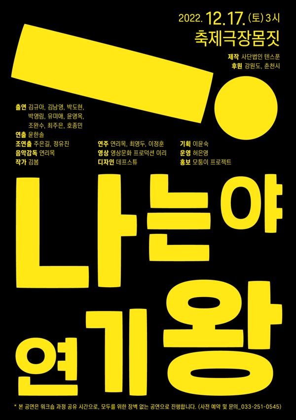

그린피그 > 아카이브 > 나는야 연기왕
그린피그 공동창작, 윤한솔 연출

'연기란 무엇인가? 나는 왜 연기를 하는가?' 배우 열네 명이 오디션 형식의 독백을 하고, 이어서 연기를 왜 하는가에 대한 질문에 처절하고 솔직하게 답한다.
2016.10.26–11.6 / 남산예술센터 드라마센터
이전: 〈비하인드 컷〉 | 다음: 〈할미꽃단란주점 할머니가 멜론씨를 준다고 했어요〉 아카이브로 돌아가기 | 아무 작품이나
발행일 2026.11.9